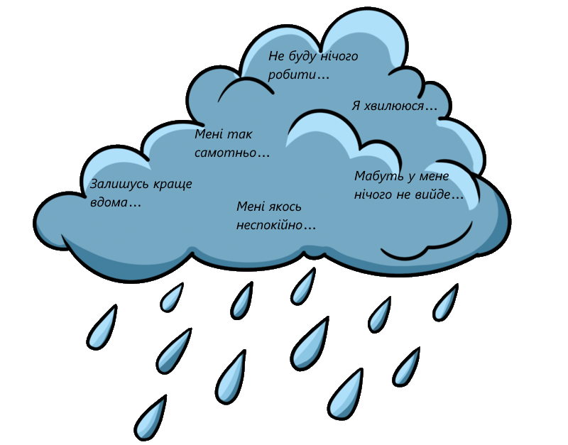
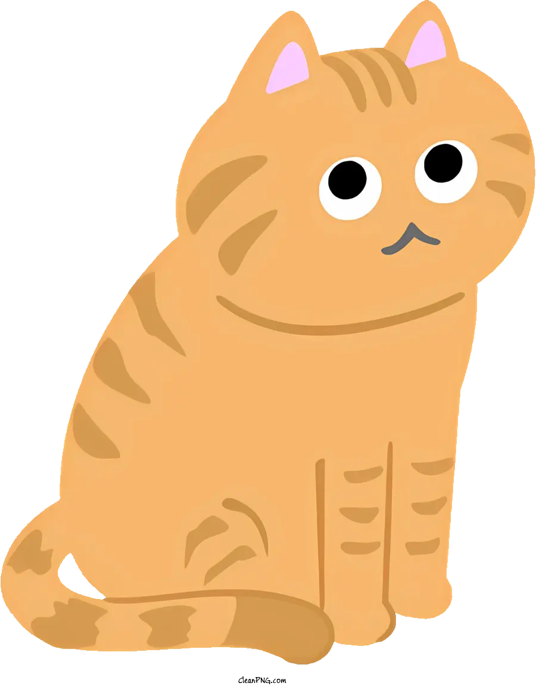
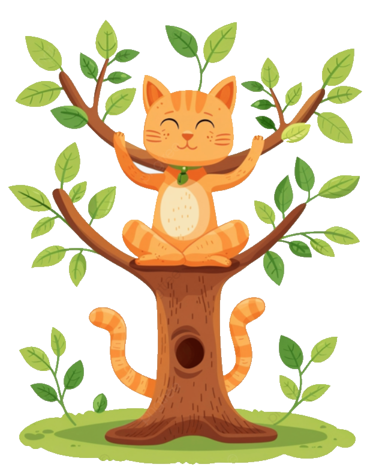

Я розумію, як важко буває в підлітковому віці. А бути українським підлітком – іноді виглядає як випробування. На цьому сайті ти знайдеш корисні поради і зможеш дізнатися більше про своє здоров’я — фізичне, психічне та емоційне.
Спробуй прості вправи, які допоможуть покращити настрій і самопочуття. Це легко і не вимагає багато часу.
Не забувай, що здорові звички — твоє життєве джерело сил. Важливо достатньо спати, їсти здорову їжу, займатися фізичною активністю. Такі звички допомагають зберегти енергію та зміцнити імунітет.
